这周没有Letter发，给大家介绍一位萌萌的小盆友。转自豆瓣
这个世界其实是很残酷的，优胜劣汰，弱肉强食，自然界每天都上演着你死我活的修罗场。
几万年来，各种生物都在为了生存努力进化着，以使自己的种群尽可能的生存繁衍。在这个艰巨而漫长的过程中，却有不少奇妙的生物，在进化的方向上点错了技能点，选了别具一格的道路，成了同种类生物中的奇葩。
最近，在BBC自然纪录片——大自然奇葩专题中，我就见识了不少被定义为奇葩的有趣生物。
这里指的奇葩（英语原词：misfit），英文原意是指不能适应环境的人。在这个纪录片中，被引申为与环境与本身所出族类格格不入的动物。
不过看来，这期简直就是卖萌与逗比生物合集，其中的不少动物，让我实在怀疑是在卖萌为生！
随便举几个例子。
这帮奇葩里有我们的卖萌国宝，素食主义者——大熊猫君。
（这里注释一下，熊猫是杂食动物，除了竹子以外，饿惨了也会吃小动物。这里BBC所说的素食者有点戏谑成分在里面，因为熊猫本质是熊，身体结构应该是肉食动物。）
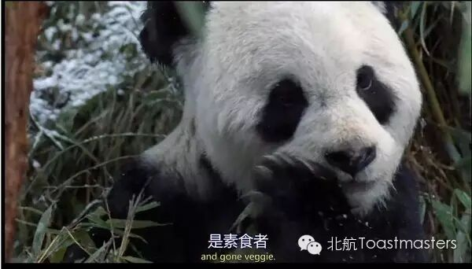
嘿咻嘿咻，竹子什么的最喜欢了！
有生活在埃塞俄比亚高原，全世界现存36种鼹鼠中，唯一在地面觅食的大头鼹鼠。虽然它们视力很差，听力很弱，生为鼹鼠，却不喜欢呆在地底下白夜行，有一颗向往光明的心，喜欢到狼群聚集的地面吃点草，沐浴一下阳光....
然后顺便享受九死一生的高原真实版打鼹鼠游戏，调戏饿狼...
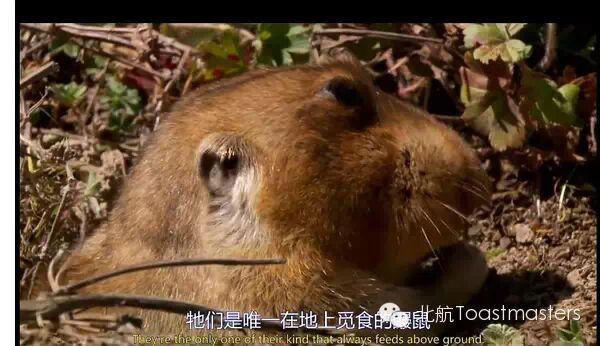
尽管头很大，但实践证明，他们真的不聪明...
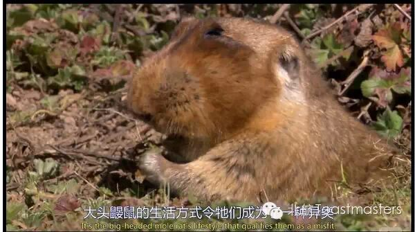
这个种族能延续下来也挺神奇的...
有生活在森林里的企鹅家族，天天在小溪里游来游去享受隐居般的生活...
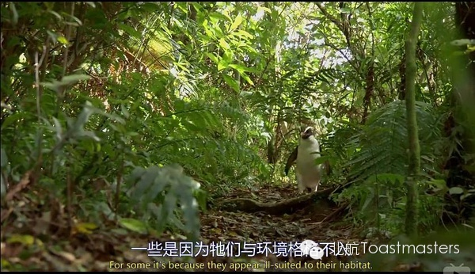
下班咯，买完菜回家啦啦啦·~~
还有永远倒着游泳老是要撞到海底石头的鹦鹉螺，简直逗比，它们的日常就是不断撞与被撞= =
最后看到他撞到乌贼无辜的逃命我笑惨了哈....
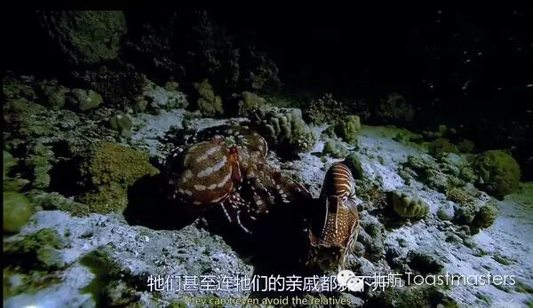
章鱼：我擦，一个月功夫你撞我五回了，诚心的吧？！
其他还有不少，我就不一一介绍了。
以上种种，虽然有些奇葩，至少都有起码的生存能力，比如熊猫虽然素食，但战斗力其实不低，毕竟是熊；
大头鼹鼠虽然眼神耳朵都不好又爱玩生死时速，但也有一种哨兵鸟做眼给他们站岗放哨，以保证逃跑生存率（虽然我很怀疑这样作死的生存率...）；
鹦鹉螺虽然天天都在撞车，简直是海底世界的大路痴+肇事之王，但至少，人家壳很硬...-= =
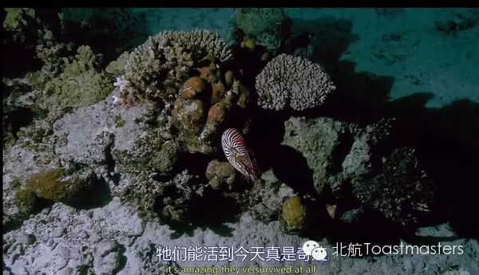
官方吐槽：它们能活到今天真是奇迹
不过接下来要出场的这位，也就是今天的主角，它们身上的奇葩二字，谁与争锋！当之无愧！
对，就是下面这只，史上最蠢的鹦鹉...
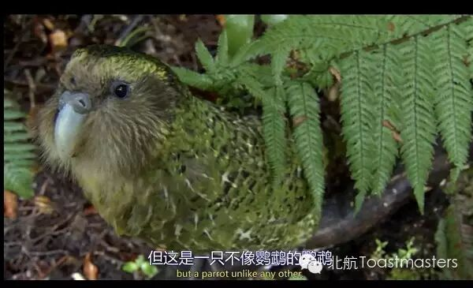
一脸蠢萌的出场啦！
它们的名字叫——鸮（xiao）鹦鹉（英文名：kakapo。发音萌萌哒~）。
鸮鹦鹉作为鹦鹉，是全世界最肥最重的一种鹦鹉，也是唯一不会飞的鹦鹉。没错，作为生活在森林里野生的鸟类，它们居然不会飞！人家鹌鹑起码还能扑哧几下低飞一阵，但他们的翅膀完全没有飞行的能力，连滑行都不行！
所以...你们是披着鹦鹉外壳的鸡么...？
kakapo在地面行走的时候，看起来像隔壁王大爷清晨溜公园一般怡然自得。
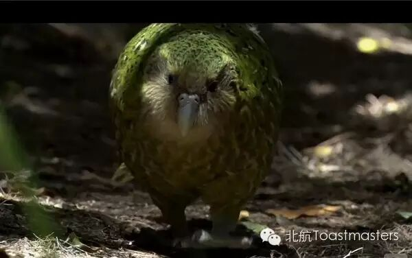
遛弯ing~~
但一旦激动起来，也会打开翅膀，大鹏展翅一般灵活地奔跑...
如下
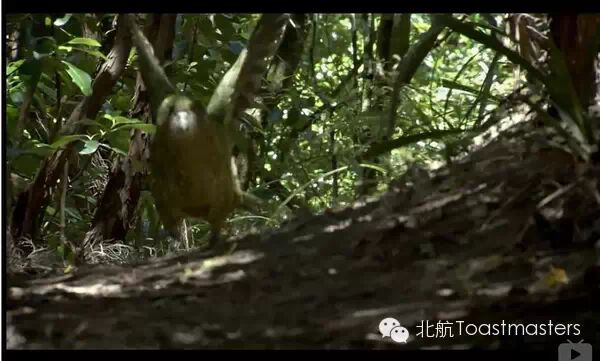
大鹏展翅！
对此弹幕的评价是
——
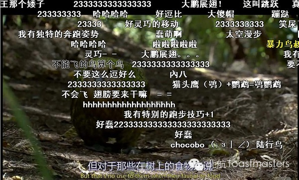
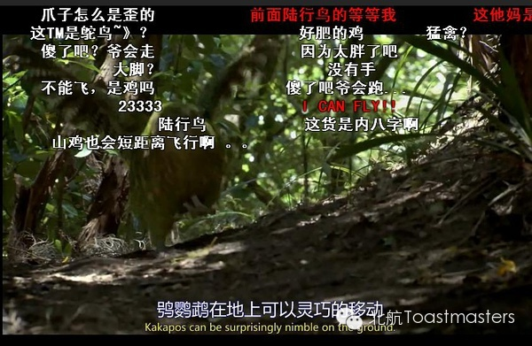
kakapo童鞋的一大技能是爬树。
生而为鸟，因为不会飞，又喜欢上树，所以进化出爬树的技能...爬树...那你们为什么要当鸟呢？
鸮鹦鹉爬树嘴脚并用，看起来笨拙而艰苦，但也算是熟练，每次依然能够爬到树顶。
但是！每当攀爬到树顶要下来的时候，它们似乎又想起了自己是只鸟的身份，却忘了自己是鸟类中不会飞的奇葩，总会尝试着打开翅膀迎风招展，我要飞得更高~~飞得更高~~
哎呀！摔了！
当然飞不起来，空中只剩一堆羽毛飞舞。坚强的鸮鹦鹉落地之后，幸亏肉厚安然无恙。鸮鹦鹉不解地看看天空，再看看自己那作用不明的翅膀，拍拍屁股长叹一声，为毛我不会飞呀？！
是呀，为毛你不会飞呀？
嗯嗯，我来解说一下。
因为鸮鹦鹉那对形同虚设的短翅膀，缺少了鸟类控制飞行肌肉的龙骨，所以不足以支撑使它飞行，而只能维持一般平衡，以便爬树的时候不至于掉下去。
以上是百度上的回答，不过我觉得最关键的问题还是，鸮鹦鹉太肥！
它们多会于体内储存大量脂肪，使其体重冠绝同类鹦鹉，这么肥，翅膀当然支撑不住！
连旁白都忍不住吐槽了。
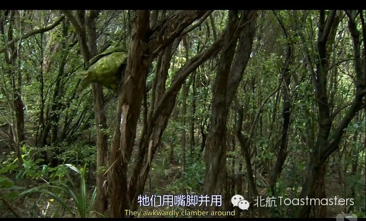
喂喂！不怕掉下去么？
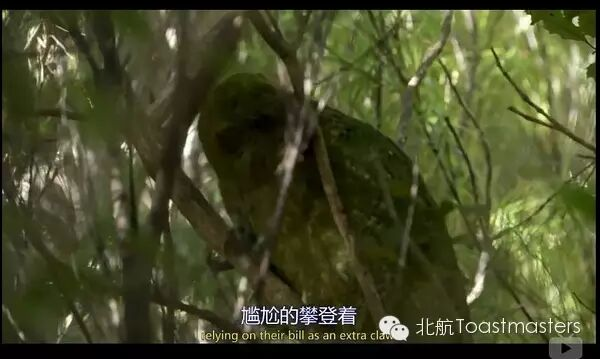
好尴尬～
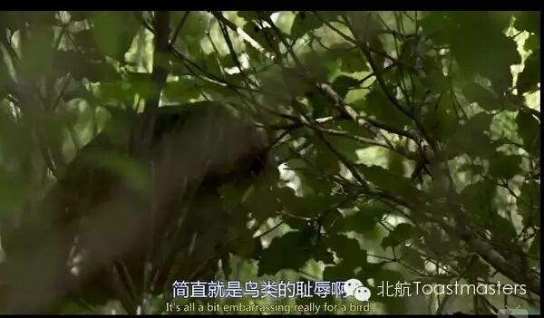
生而为鸟，实在抱歉～～
此外，以下几点特征，也印证着鸮鹦鹉的智商确实令人着急。
1.鸮鹦鹉是夜猫子，喜欢在晚上活动，不愧其名字中的鸮。野生kakapo喜欢独居，雌性对繁殖兴趣不大，平均每五年才生一次小鸟，比世界杯周期还长。
另外，雄性求偶还特别蠢。
笨拙的雄性求偶的方式就是，大家到固定的地方打扫好卫生，然后开始唱起难听的歌，吸引雌性过来，雌性过来一看，要是觉得哎呀傻逼就偷偷溜走了，留下孤独的雄性寂寞地唱一晚上KTV。
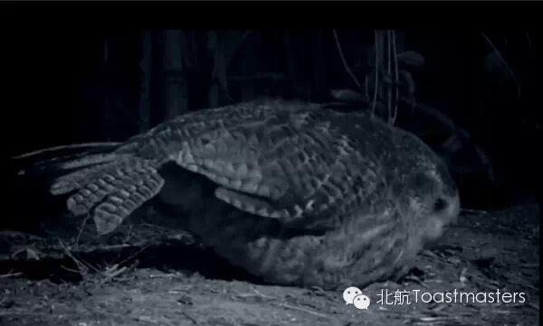
这体型看起来比鸡还美味的样子...
有一些一直在叫也没把老婆叫来。只好等，看上去很忧伤。比如下面这只，因为唱的太难听，唱了一晚上都没有吸引到MM来，做鸟真失败。
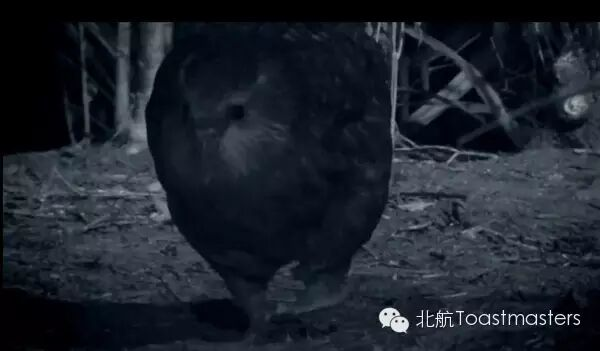
咦？对面母鸟看过来~
因为鸮鹦鹉的叫声穿透性很强，所以很容易被晚上的掠食者搜索发现。而精虫上脑的雄性，不但不会冷静辨别，还会经常将路过的负鼠之类的生物或饥肠辘辘的掠食者当做前来约会的雌性，大叫着兴奋地扑上去...
我去，你的心是有多大啊....
这画面太美，我不敢描述...
2.可能由于漫长的岁月里，鸮鹦鹉生存的环境都很安全平稳，一切都悠闲自然波澜不惊。所以自从1840年欧洲殖民者登陆后，随之带来了许多外来生物，比如猫、老鼠、黄鼠狼等，都对鸮鹦鹉的生存环境带来的严重威胁。
而生来蠢萌的鸮鹦鹉，看到陌生生物与威胁的防御机制非常碉堡，那就是——静止不动！
我勒个去，静止不动算哪门子防御机制啊，你是以为自己变身成石头了吗？！
不知道的初次碰见鸮鹦鹉，还以为它们散发着一种高贵冷艳的王霸之气。
一开始，外来物种也是很怕的，因为他们也不知道这不会飞的胖鸟到底会什么绝招。
后来有胆大的上去挑衅，才发现丫其实就是智商运转不过来，卡住死机了！
这回可真是人为刀俎，你为鱼肉，追都不用追了...诶...
3.鸮鹦鹉确实很单纯，从来不怕陌生人，甚至接触过的很多人认为，它们比起像鸟，更像狗一般与人亲近。可惜当地土人不喜欢它们的叫声，太刺耳，所以一般都当做野鸡放些孜然烤着吃了....5555
前面说过，鸮鹦鹉在遇到陌生情况和惊吓时，通常的防御机制（？）是一动不动，但有时也会及时爬到树上，但因为自己不会飞行，却又喜欢试图从树上飞下来，也会直接导致伤亡。
即使不爬树，智力低下的鸮鹦鹉经常忘记自己是不会飞行的鸟类，往往匆忙逃离之时拍打着翅膀，把自己给拍傻了，反而失去平衡仰面摔倒在地。
它们唯一的技能就是利用自己的拟态羽毛隐藏在青翠的草丛间...
然后心中默念：你看不见我，你看不见我~
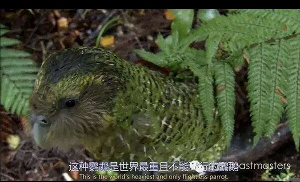
怎么有种蛋蛋的忧伤...
4.更悲催的是，鸮鹦鹉闻着很香。
鸮鹦鹉有非常发达的嗅觉，对于夜间活动的习性很有帮助。他们身上有一种果香或蜜糖的气味。
这有助于鸮鹦鹉在森林里寻找同伴，但是不巧的是，哺乳动物掠食者也喜欢这种味道。
简直就是额头上写着 “快来吃我啊的”动物啊....
5. 鸮鹦鹉的数量一直以来不多，于是新西兰特地将它们放养到一个没有天敌，食物充足的岛上圈养。当地政府还设立了投食站，甚至人工孵化鸟蛋和人工喂养小鸟。
新西兰的这一举动扭转了鸮鹦鹉灭绝的命运，但这种鸟类的生长一直很慢，繁殖也不积极，所以始终处在灭绝的边缘...
生命真的很沉重，也很脆弱，虽然它们单纯蠢萌，充满乐观与天真，可能不知道自己的危险命运...
身为世界上寿命最长的鸟类之一，它们通常能活90-100岁左右。比人类还长，也许正应了一句老话——心宽体胖，长命百岁。天生活得无忧无虑，反而没有对生存的危机感，造成了它们濒危的现状。
截止2012年，鸮鹦鹉的数量有126只，其中包括78个养殖体成鸟。
每当有摄制组接近鸮鹦鹉时，它们总是很兴奋地跟着摄像人员，不管曾经受过多少伤害，这种动物，似乎天生就健忘，对这个世界，始终充满纯真的好感...
这也是许多人接触这个奇葩，便很快喜欢上它们的原因吧...
像它们这么笨拙的生活，却让我莫名感动与悲伤。
我也衷心希望，这种胖胖的，不会飞的，又很笨很呆的蠢鸟，可以得到更多人类的关注与喜欢。
因为它们的蠢，更像这个世界难得一见的，傻得单纯。
由于放假以及officer换届原因，北航toasmasters7月份暂无活动安排。
按计划，8月恢复活动。届时，可能有地点变动。敬请关注。